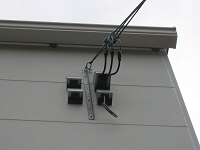
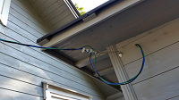
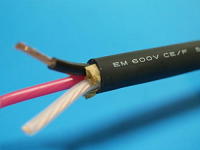

引込線工事
電力会社の引込線によって各建物に電気を供給するための工事。メータ設置やアースなど対応。
電柱から各家庭に電力を送るための引込線を取り付ける電気工事を引込線工事といいます。まずは電柱上で配電線から分岐線を引くことから始まり、家の中で問題なく電気を使用できるようにするため、なくてはならない工事です。
引込線工事の工程
引込線工事の平均的な工程は次の通りです。
電力会社への契約申し込み
引込線工事をするには、まず、そのエリアの電力会社に契約を申し込まなくてはいけません。3週間前ぐらいから受け付けてもらえますが、それ以前でも応相談となります。引込線工事の多くは電力会社の指定電気工事店によって行われています。
配電線から分岐線を引く
配電線を電柱上で分岐して、引込線を引きます。空中を架け渡す架空引込線が一般的ですが、地中引込線などもあります。引込線は、家の軒下などにある引込線取付点に接続されます。
メーターの取り付け
メーターを台座などに取り付け、引込線取付点から伸ばした配線をメーターと接続します。この時、合成樹脂管などに納めて配線されます。
メーターから分電盤までの配線
メーターの台座の裏から屋内に配線して分電盤と接続します。
アンペアブレーカーの取り付け
分電盤にアンペアブレーカーを取り付けます。一般家庭では当面は30A契約となることがほとんどです。
竣工検査
検査後、電力の使用を開始します。
引込線工事の注意点
引込線工事は以下のような注意が必要となります。
架空引込線の安全性
空中を架け渡す架空引込線は、張力による断線が起きないように留意しなければいけません。そのため、電柱と建物の間に支持線を張るなどの工夫が必要です。また、支持線は両端に引留めがいしを取り付け絶縁するようにします。がいしとは、電線と支持物の間を絶縁するための器具のことです。
メーターの設置場所
メーターは検針のしやすさに配慮して地上から0.8～1.8mの高さに取り付けなければいけません。また、メーターの配線は電源側が左側、負荷側が右側と決められています。さらに、電力会社ごとに細かいルールがあるので、事前に資料をしっかりとチェックする必要があります。
引込線の高さ
引込線は原則として家屋の壁の地上から4m以上高い場所に取り付けを行います。ただし、構造上やむを得ない事情があり、交通などに支障がないならば2.5m以上でも許可されます。
補助支持物の利用
住宅事情によって引込線が長くならざるを得ないケースもあります。このような場合、補助支持物を設置することで美観を守ることも可能です。補助支持物とは、たとえばコンクリート小柱、鉄管小柱、複合鉄管小柱のようなものです。小柱を経由して家屋に引込線を配線することにより、引込線の混線などを防止します。
引込線のサイズ
家電の中でも照明器具、冷蔵庫などは100V、IHクッキングヒーターやエアコンは200Vを利用しています。そのため、引込線は単相3線式という3本の電線で100V、200V両方に対応できるものを使用するのが一般的です。よく利用されるのが3芯CVケーブルですが、契約容量によって太さが異なってきます。60A以下の契約ならだ14スケと呼ばれる直径4.2mmほどのケーブルが使用されます。